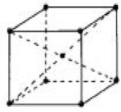
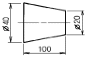
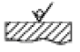
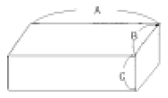
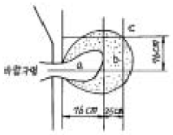

축로기능사 (2005-04-03 기출문제)
1과목: 임의구분
1. 고속도강의 고온에서 경도 저하를 방지하기 위해 탄소강에 첨가하는 원소로 옳지 않은 것은?
- Cu
- Cr
- W
- Co
(정답률: 64%)

2. 다음 그림의 결정 격자형은?

- 체심입방격자
- 면심입방격자
- 조밀육방격자
- 면정방격자
(정답률: 70%)
3. 다음 중 기계적 성질이 아닌 것은?
- 열팽창계수
- 강도
- 취성
- 탄성한도
(정답률: 70%)
4. 용융금속이 응고할 때 먼저 응고하는 순서로 옳은 것은?
- 핵 → 수지상정 → 결정입계
- 결정입계 → 수지상정 → 핵
- 핵 → 결정입계 → 수지상정
- 수지상정 → 결정입계 → 핵
(정답률: 64%)
5. 철강 재료의 감별법으로 옳지 않은 것은?
- 불꽃 시험편
- 형광 침투법
- 시약 반응법
- 접촉력 기전력법
(정답률: 63%)
6. 노말라이징(normalizing)열처리의 목적으로 옳지 않은 것은?
- 결정조직을 조대화시킨다.
- 과열조직을 미세화한다.
- 기계적 성질을 표준화시킨다.
- 내부응력을 제거한다.
(정답률: 66%)
7. 공업적으로 경합금 재료에 속하는 것은?
- 주철
- 탄소강
- 합금철
- 알루미늄합금
(정답률: 52%)
8. 해드필드강(hadfield steel)은?
- 페라이트계 고니켈강이다.
- 오스테나이트계 고망간강이다.
- 펄라이트계 고크롬강이다.
- 펄라이트계 저니켈강이다.
(정답률: 63%)
9. 상온에서 조밀육방격자(HCP)만으로 짝지어진 것은?
- Cr, Mo
- Fe, Ca
- Ti, Mg
- Cu, Ag
(정답률: 60%)
10. 포금(gun metal)이란?
- Mg에 8~12[%] Sn와 소량의 Pb를 넣은 것
- Al에 8~12[%] Zn과 소량의 Sn을 넣은 것
- Ag에 10~15[%] Zn과 1[%] Al을 넣은 것
- Cu에 8~12[%] Sn과 1-2[%] Zn을 넣은 것
(정답률: 57%)
11. 주철의 상 중에서 가장 단단하며 백주철의 주체가 되는 것은?
- 페라이트
- 시멘타이트
- 오스테나이트
- 펄라이트
(정답률: 64%)
12. Fe-C계 평형 상태도에서 1,130℃, 4.3% C를 함유하는 점을 무엇이라 하는가?
- 공정점
- 포정점
- 자기 변태점
- 공석점
(정답률: 55%)
13. ø20H6으로 표시된 구멍에서 "6"이 뜻하는 것은?
- 기준 치수
- 치수 허용차
- 구멍의 개수
- IT공차 등급
(정답률: 57%)
14. 얇은 판으로 된 물체를 한 평면 위에 펼쳐서 그린 것은?
- 정투상도
- 전개도
- 사투상도
- 입체도
(정답률: 79%)
15. 도면의 크기에서 A0의 면적은 약 1m2인데, A2의 면적은 얼마인가?
- 약 0.5 m2
- 약 0.25 m2
- 약 0.13 m2
- 약 0.06 m2
(정답률: 54%)
16. 축의 최소허용치수가 구멍의 최대허용치수보다 큰 경우의 끼워맞춤은?
- 헐거운 끼워맞춤
- 중간 끼워맞춤
- 억지 끼워맞춤
- 보통 끼워맞춤
(정답률: 75%)
17. 제도 도면에서 치수보조선이나 치수선으로 사용되는 선의 종류는?
- 굵은 실선
- 가는 실선
- 은선
- 일점 쇄선
(정답률: 82%)
18. 아래 도형과 같은 물체의 테이퍼 값은?

- 2/5
- 1/10
- 1/5
- 5
(정답률: 70%)
19. 도면에 "t 4"로 표시되었다면 무슨 뜻인가?
- 1변이 4 mm 인 정4각형
- 넓이가 4 mm2인 정4각형
- 두께가 4 mm 인 판재
- 강도가 4 kg/mm2인 재료
(정답률: 88%)
20. 제도 도면에서 미터나사를 나타내는 기호는?
- M
- PT
- UNF
- PF
(정답률: 88%)
2과목: 임의구분
21. 다음 그림의 지시 기호가 뜻하는 것은?

- 제거 가공을 필요로 한다.
- 제거 가공을 하지 않는다.
- 제거 가공의 필요 여부를 문제 삼지 않는다.
- 연삭가공을 해야 한다.
(정답률: 47%)
22. 일반구조용 압연강재의 기호 SS 330 에서 330 의 단위는?
- N/cm2
- kg/mm2
- kg/cm2
- N/mm2
(정답률: 72%)
23. 다음 중 치수숫자와 같이 사용하는 문자의 기입이 잘못된 것은?
- R15
- ø20
- 30Sø
- C5
(정답률: 87%)
24. 다음 중 용도에 따른 선의 종류가 아닌 것은?
- 치수선
- 중심선
- 일점쇄선
- 피치선
(정답률: 46%)
25. 내화벽돌을 쌓을 때 서로 접합시킬 목적으로 만든 분말 상태의 내화물명은?
- 몰탈
- 캐스타블
- 플라스틱
- 점토질
(정답률: 80%)
26. 내화도가 가장 높은 벽돌이 사용되는 로는?
- 도가니로(curcible)
- 용선로(cupola)
- 고로(Blast Furnace)
- 저온 뜨임로(Tempering purnace)
(정답률: 83%)
27. 산성 내화물에 해당되는 것은?
- 규석질 내화물
- 탄소질 내화물
- 마그네시아질 내화물
- 알루미나질 내화물
(정답률: 55%)
28. 아치 축조의 원칙 중 옳지 않은 것은?
- 곡율에 맞는 줄임 연와를 사용한다.
- 생연와를 맞추어 쌓는다.
- 줄임연와의 균열이나 깨진 것은 사용치 않는다.
- 줄눈 두께는 얇을수록 좋다.
(정답률: 79%)
29. 기체 연료는 어떤 연소를 하는가?
- 표면연소
- 증발연소
- 폭발연소
- 확산연소
(정답률: 59%)
30. 다음 중 마름질의 기본으로 옳지 않은 것은?
- 주어진 형상의 벽돌을 사용하여 가장 강도가 낮은 조립쌓기를 택한다.
- 노벽쌍기에서는 감자 줄눈을 만들지 말 것.
- 팽창대를 고려해서 마름질 할 것.
- 한 종류의 벽돌을 공통으로 사용할 수 있는 마름질을 할 것.
(정답률: 70%)
31. 전기로용 내화물 중 고온소성 마그네시아 벽돌의 하중 연화점은 몇 ℃이상이어야 하는가?
- 1,000℃ 이상
- 1,200℃ 이상
- 1,300℃ 이상
- 1,700℃ 이상
(정답률: 50%)
32. 불안전한 상태와 관련이 가장 적은 것은?
- 기계적 상태 불량
- 위험물질의 방치
- 내성적 성격
- 위험장비의 방치
(정답률: 87%)
33. 몰탈믹서 운전작업시 유의사항으로 옳지 않은 것은?
- 스위치 작동을 점검한다.
- 회전중에 몰탈을 추가로 넣는다.
- 한꺼번에 전부 넣지않고 조금씩 첨가하여 넣는다.
- 수분배합을 잘 하여야 한다.
(정답률: 91%)
34. 노벽의 높이가 2m 정도인 경우 단열 벽돌은 몇 장마다 내화벽돌의 이음 벽돌을 놓아야 좋은가?
- 2~3
- 8~9
- 15~16
- 20~21
(정답률: 69%)
35. 보온재의 구비조건으로 옳지 않은 것은?
- 비중이 클 것
- 열전도율이 적을 것
- 내열성이 클 것
- 변질하지 않을 것
(정답률: 75%)
36. 전기 기기의 감전사고를 막기 위한 장치는?
- 전류계 설치
- 고압전압계 설치
- 접지설비
- 방폭설비
(정답률: 92%)
37. 규석질 내화물의 주요화학 성분은?
- Al2O3
- Cr2O3
- SiO2
- CaO
(정답률: 84%)
38. 전기로에 속하지 않는 것은?
- 균열로
- 저항로
- 아크로
- 유도로
(정답률: 70%)
39. 연와 절단기(캇타)가 사용되는 경우와 관계가 먼 것은?
- 정밀한 촌(寸)법으로 연와를 절단할 때
- 절단면을 평활하게 자를 때
- 복잡한 형상이나 곡선을 가공할 때
- 동일형상의 가공연와가 대량으로 있을 때
(정답률: 84%)
40. 연와 쌓기의 기본 원칙으로 옳지 않은 것은?
- 치수를 정확하게 한다.
- 몰탈을 충분히 바르고 줄눈을 균일하게 한다.
- 연와와 몰탈은 각각 성질이 다른 것을 사용하여 내화도를 높인다.
- 벽돌쌓기는 이음질 구조로 한다.
(정답률: 93%)
3과목: 임의구분
41. 정으로 깎아낸뒤 벽돌의 절단면을 고르게 다듬질하기 위해 사용되는 공구는?
- 탕갈로이
- 눈칼
- 해머
- 벽돌 흙손
(정답률: 81%)
42. 내화물을 급열 및 급냉 시켰을 때 표면과 내부와의 열팽창에 의해 비틀림이 생기는 현상은?
- 행깅현상
- 열적 스폴링 현상
- 기계적 붕락 현상
- 쌍정 현상
(정답률: 77%)
43. 공업용로에서 쇳물이 나오는 부근 바닥에 물이 있을 때 예상되는 현상은?
- 용해로의 장입량이 증가한다.
- 로상내의 슬랙구가 없어진다.
- 폭발 우려가 있다.
- 로내 장입물의 강하가 용이하다.
(정답률: 84%)
44. 납석 벽돌의 특징 설명으로 옳은 것은?
- 잔존 수축, 통기율이 크다.
- 고온강도가 높다.
- 열팽창, 열전도도가 크다.
- 일산화 탄소에 대한 안정도가 크다.
(정답률: 35%)
45. 플라스틱(Plastic)시공 후 시공 표면을 긁어 주는 트리밍(trimming)작업을 하는 주된 이유는?
- 외관을 깨끗하게 하기 위해서
- 사용시 균열을 줄이기 위해서
- 표면 박락을 방지하기 위해서
- 내부 수분 증발을 쉽게 하기 위해서
(정답률: 42%)
46. 다음 그림에 나타난 연와의 중량은? (단, A:1000㎜, B:150㎜, C:150㎜, 비중:3.2g/㎝3 )

- 72㎏
- 75㎏
- 80㎏
- 84㎏
(정답률: 52%)
47. 노벽 벽돌 축조시 염기성 벽돌을 쌓을 때 벽돌사이에 몰탈을 사용할 수 없으므로 철판을 끼우거나 벽돌을 철판으로 쌓는 것은?
- 스틸 클랫(steel clad)
- 스틸 랩(steel wrap)
- 스틸 블록(steel block)
- 스틸 캠(steel cam)
(정답률: 61%)
48. 스프레이(SPRAY)재 시공의 설명으로 옳지 않은 것은?
- 부정형 내화물이 아니다.
- 비상시 돌발 수리에 대한 응급수리가 가능하다.
- 형틀을 필요로 하지 않는다.
- 공사기간이 단축된다.
(정답률: 83%)
49. 내화성 골재와 수경성 시멘트(cement)를 혼합한 내화물로써 물과 혼합하여 형틀에 넣어 시공하면 그대로 내화성 구조물로써 사용할수 있는 것은?
- 캐스타블
- 플라스틱
- 람밍재
- 코팅재
(정답률: 87%)
50. 축로 쌓기에 직접 사용되는 공구와 거리가 먼 것은?
- 플라스틱 망치
- 흙손
- 눈칼
- 레이들
(정답률: 84%)
51. 내화물의 화학적 성분에 의한 분류에 속하지 않는 것은?
- 산성내화물
- 중성내화물
- 염기성내화물
- 알카리성 내화물
(정답률: 80%)
52. 각도를 자유로이 조정할 수 있는 자로서 각도의 측정에 쓰여지며 벽돌 가공의 먹줄내기에 쓰이는 것은?
- 단열톱
- 트랜싯
- 자유척
- 내림추
(정답률: 70%)
53. Duct나 맨홀 내부에 내화물 점검을 위해 출입하려고 할 때 가장 먼저 취해야 할 조치는?
- 내부 점검을 위해 투광등을 설치한다.
- 내부 추락 위험 개소에 안전 Deck를 설치한다.
- 입구에서부터 유독 Gas나 O2 결핍상태를 Check한다.
- 내부로 들어가 상부 낙하물 위험이 있는지 확인한다.
(정답률: 81%)
54. 내화 몰탈의 구비 조건으로 옳지 않은 것은?
- 필요한 내화성을 가져야 한다.
- 사용 연와와 동질의 몰탈을 사용한다.
- 건조 소성에의한 수축이 커야한다.
- 필요한 접착력을 가져야 한다.
(정답률: 91%)
55. 바람구멍(tuyere)앞의 연소부분 그림에서 b부분의 가스 조성은?

- CO + H2
- O2 + CO2 + CO + N2
- CO2 + CO + N2
- C + CO + N2
(정답률: 57%)
56. 고로내에서 온도가 가장 높은 곳은?
- 보시
- 샤프트
- 노구
- 벨리
(정답률: 64%)
57. 발열량의 단위가 아닌 것은?
- cal/g
- B.T.U/Lb
- g/㎝2
- kcal/kg
(정답률: 47%)
58. 제강에서 사용하는 란스(lance)의 재질은?
- 콘스탄탄
- 순구리
- 알루미나
- 전해철
(정답률: 50%)
59. 공업용 원료로 장입할 수 있도록 정립된 철광석을 처음 장입하는 로는?
- 균열로
- 저항로
- 고로
- 도가니로
(정답률: 78%)
60. 철 제련의 슬랙의 주성분이 아닌 것은?
- SiO2
- CaO
- Al2O3
- TiO
(정답률: 74%)